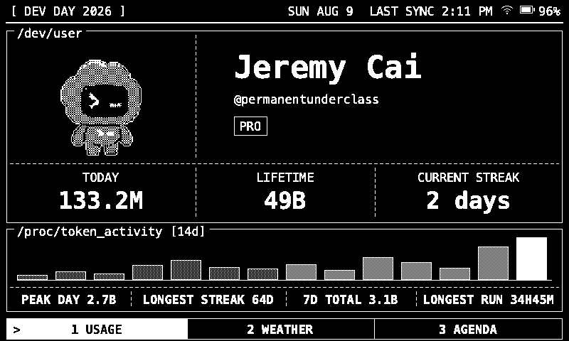
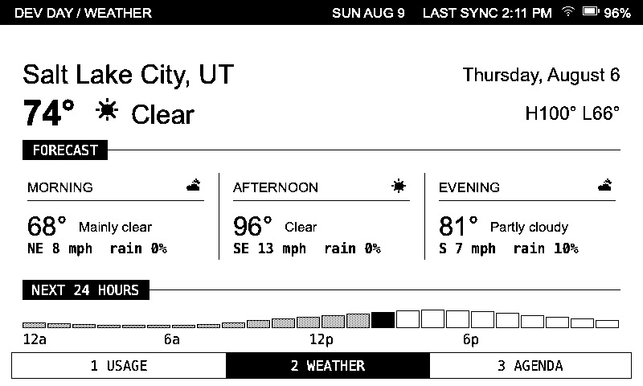
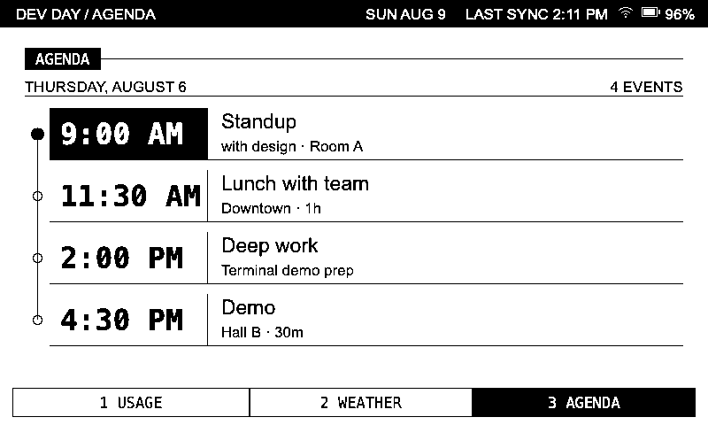

Dev Day E-Ink Terminal
The requested Usage-page change is complete and passes the software release pipeline. The pet was stretched because a 96:104 source cell was independently forced into a 200×185 box, making it about 17% too wide. It now preserves its native proportion, stays inside its own partial-refresh region, and the rail reads [ DEV DAY 2026 ].
Native aspect, centered pet, correct rail.
21 tests, 20 native fixtures, ESP32 + WASM builds.
4 events + 2 pet frames; cap is 12,000 B.
Physical panel and stale-data behavior remain.
Lead judgment
Accept the code/render change; do not approve a production flash batch yet. Run the named UC8179/D3 line test and decide how Weather/Agenda should disclose stale cached sections. Those are evidence and product-trust gaps, not visual-layout failures.
Current 800×480 surfaces

Aspect-correct pet, DEV DAY 2026 rail, true 14-day chart, four local stats.

Spacing, icon hierarchy, 24-hour chart, physical-key rail.

Four-row schedule, next-event emphasis, non-touch navigation.
Implemented and verified
Data correctness
- Peak day, longest streak, seven-day total, and longest run map to fields exposed by local
account/usage/read. - The chart now fills an actual 14-calendar-day window rather than taking the last 14 non-empty buckets.
- Oversize payloads fail locally with a clear size error before USB opens.
- Live and cached partial updates now use the same field-level merge.
Trust and safety
- Factory Agenda defaults are empty; fictitious August 6 events were removed.
- Profile-image downloads no longer forward the local ChatGPT bearer token to a CDN URL.
- Large parse scratch storage moved out of the loop-task stack.
- The WASM alternate-frame export is present and the committed emulator was rebuilt.
Remaining findings
| Priority | Finding | Evidence / failure mode | Recommendation |
|---|---|---|---|
| P1 | Cached Weather or Agenda can look newly synced. | tools/dash_sync.py:999–1024 omits a failed section, while firmware/firmware.ino:424–433 intentionally preserves it. The top date and last-sync timestamp still update. The audit fixtures expose the mismatch: the rail is Aug 9 while both section bodies say Aug 6. | Add explicit per-section freshness and render STALE/UNAVAILABLE, or clear a failed section. Decide before production. |
| P1 | Physical partial-refresh behavior is still unproven. | Native preview proves framebuffer ownership and frame restoration, and the installed Seeed_GFX implementation rounds the x-window outward. It cannot prove UC8179 ghosting, optical weight, actual five-second cadence, or D3/BUSY behavior. | Flash one assembled unit and run the new line-test items through at least ten animation bursts. |
| P2 | D3 is suppressed for a full-refresh-sized 1.2 seconds after each partial update. | firmware/cards.cpp:1540–1541 calls the same notifier as a full refresh; firmware/buttons.cpp:11–32 drops key 3 during the window. Four swaps create 4.8 seconds of potential Agenda-key dead time. | Measure partial BUSY duration on hardware, then give partial updates their own shorter suppression window. |
| P2 | A private ICS URL is stored in service arguments. | tools/dash_sync.py:1141–1143 places the feed URL in launchd/systemd arguments, then writes it into the unit file. That URL may be a bearer credential and can also appear in process listings. | Store the URL in a mode-0600 settings file and pass only the settings path to the service. |
| P2 | No continuous integration exists. | All local checks pass, but there is no .github/workflows pipeline to prevent stale WASM, preview, or release artifacts from landing later. | Add a CI job for Python tests, native render, WASM export check, ESP32 build, and git diff --check. |
| P2 | Profile-photo fallback lacks visual evidence. | The security boundary is fixed and the conversion is unit-covered, but the audit has no representative photograph fixture on the inverted Usage page. | Add one portrait fixture and judge clipping/negative-tone output at 800×480 before calling photo fallback polished. |
| P3 | Usage changes theme between empty and populated states. | Populated Usage is black terminal UI; empty Usage uses the shared white prompt layout. Both are legible, but the transition feels like two products. | Keep for this release unless the empty state is redesigned deliberately; this is polish, not a blocker. |
| P3 | Parked calendar code remains as maintenance weight. | The user explicitly asked to comment out the rejected grid. Its parser fields, fixtures, and disabled renderer remain, including about 371 bytes in CardContent. | Delete in a cleanup change if the experiment will not return; do not mix that cleanup into this visual release. |
State and copy audit
| State | Result | Notes |
|---|---|---|
| Populated pages | PASS | All three pages fit at 800×480; Usage footer fits the real device mono font. |
| Long copy | PASS | Name, handle, weather location, event title, and detail truncate inside their regions. |
| Empty pages | PASS | Honest setup prompts, centered cursor, no fake agenda. Theme discontinuity noted above. |
| Offline header | PASS | Wi-Fi slash, battery, date, and sync rail remain legible. |
| SoftAP credentials | PASS | SSID, password, and URL fit on Usage, Weather, and Agenda. |
| Non-touch navigation | PASS | Tabs remain display-only labels for physical keys 1–3; no touch affordances were introduced. |
Verification record
Passed
- 21 Python sync/calendar/security tests
- 20 native page/state/frame fixtures
- Primary → alternate → exact primary restore check
- WASM rebuild and alternate export verification
- ESP32 production package and checksums
- Shell syntax, JS syntax, Python compile,
git diff --check
Release footprint
- Application: 1,470,920 bytes / 2,097,152 (70%)
- Globals: 57,100 bytes / 327,680 (17%)
- Local payload: 5,697 / 12,000 bytes
- Factory image: 16 MiB
- Update/recovery image: 1,471,168 bytes
- QR decodes to the repository URL
Adversarial review
Three read-only Claude CLI reviewers used Skeptic, Architect, and Minimalist lenses. Accepted findings drove the one-frame fallback, exact partial ownership, serial/animation exclusion, true 14-day window, payload cap check, cache parity, footer-width fix, native alternate-frame fixture, and WASM export fix. One alignment concern was rejected after inspecting the installed Seeed_GFX source: EPaper::updataPartial rounds both boundaries outward to 8/16-pixel alignment. Duplication and parked-calendar findings were deferred as non-blocking cleanup.
Process limitation: the adversarial-review package referenced missing brain/principles.md resources. Reviewers applied the named principles directly; no finding relied on those missing files.